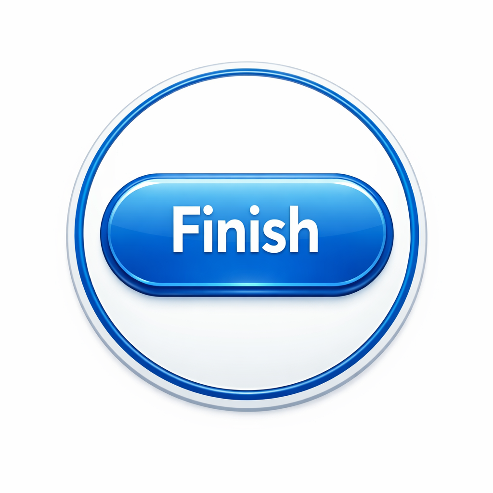

The kidnappers drove Brooklyn's uncle to an old abandoned house on the outskirts of town. The building was surrounded by overgrown weeds and broken windows, making it the perfect place to hide. Inside, they tied him to a chair and began arguing about what they should do next. Unbeknownst to them, Brooklyn had managed to provide the police with crucial information about the van and its destination.
Just as the kidnappers thought they were safe, the sound of sirens echoed through the night. Police vehicles surrounded the abandoned house,
their flashing lights illuminating the dark property. Officers rushed inside and quickly arrested the kidnappers before they could escape.
Brooklyn's uncle was safely rescued,
and the criminals were taken into custody. Relieved and exhausted, Brooklyn was reunited with her uncle, knowing that her
quick thinking had helped bring the dangerous situation to an end.
|
 |
|
|
|
|